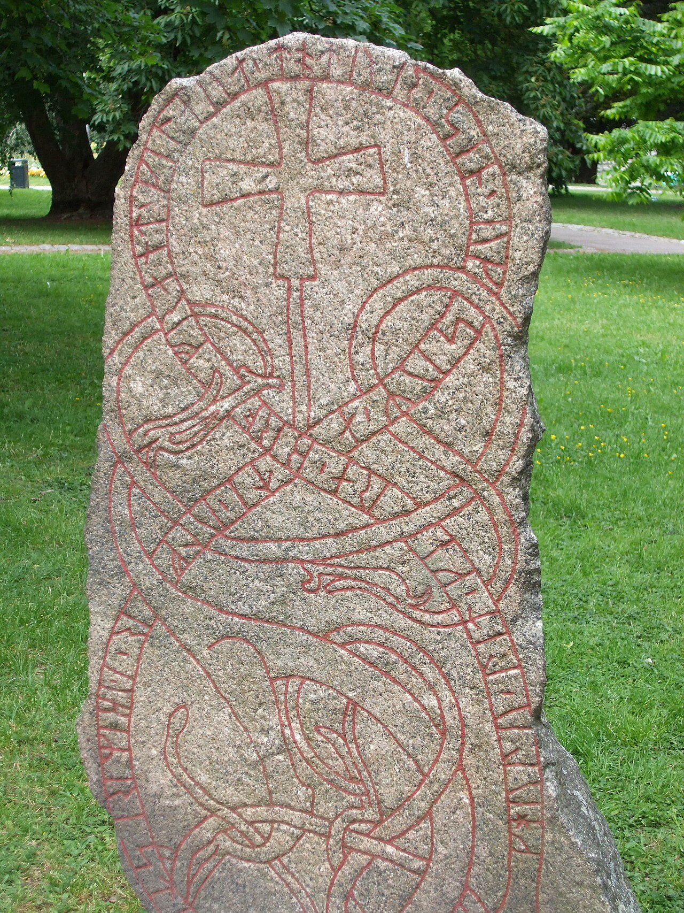

Gullaug lät göra bron för Gillaugs, sin dotters, själ, och henne hade Ulv till hustru. Öpir ristade.
Så står det på en runsten vid Morby i Lagga socken i Uppland. Gillaug var vuxen och gift när hon dog, och det var hennes mor som byggde bron efter henne. Det är en av mycket få runstenar som minns en dotter. De flesta döttrar på vikingatiden fick aldrig någon sten, och de flesta nämns inte ens på stenen efter sin far. Den här artikeln handlar om dem – om varför de är så få, och om vad de få stenarna efter dem har gemensamt.

Döttrarna som saknas
Vi gick för hand igenom alla vikingatida svenska runinskrifter där Rundatas översättning talar om en dotter eller en mö – ett femtiotal. Arton av dem är minnesinskrifter efter en dotter. Fjorton står på runstenar, och det är dem vi räknar med. De andra fyra är ristade i en berghäll (U 311), på ett jordfast block (Sö 331) och på gravhällar (Ög 239, Sm 94). Efter en son är 268 runstenar resta.
Döttrar föddes lika ofta som söner, och de dog lika lätt. Det vet vi också från stenarna själva. På Hillersjöhällen i Uppland (U 29), den längsta släktberättelse som finns på en runsten, står det om Gerlög och hennes andra man: Då fick de barn. Men en mö levde; hon hette Inga. Av barnen överlevde bara en dotter. Ändå är det nitton gånger så många stenar efter söner som efter döttrar.
Ändå är det nitton gånger så många stenar efter söner som efter döttrar.
Döttrarna saknas också bland de levande. På de 403 stenar efter en far där barnens namn går att läsa nämns 846 barn. 775 av dem är söner och 71 döttrar.
Om alla barn hade fått stå med skulle ungefär hälften vara döttrar. Nu är det var tolfte. De flesta döttrar är alltså tysta två gånger om: de fick sällan en egen sten, och de nämns sällan på stenen efter sin far.
Sist i raden
När döttrarna väl nämns bland syskonen står de oftast efter bröderna. Av de 35 syskonlistor där både söner och döttrar finns står döttrarna sist i 25. Om ordningen vore slumpvis skulle de stå sist i ungefär 14. Ett så tydligt mönster uppstår av en slump i ungefär ett fall på tiotusen. Men i den ena halvan av materialet är mönstret svagare (döttrarna står sist i 10 av 17 listor, mot 7 väntade) än i den andra (15 av 18, mot 7), och därför räknar vi det inte som ett fynd. Det ser ut som om sönerna räknades först.
Ibland är det döttrarna som reser stenen – och då oftast när det inte finns någon son. Vid Ramsta i Södermanland (Sö 60) har Auda och Inga och Erindis som den tredje, modern och döttrarna, rest stenen efter sin far Sven och sin bror Gudfast. Brodern var död. På en sten i Linköping (Ög Fv1958;252) reser Sigrid, mön, en sten efter sin far. Och på Gotland, vid Sjonhem (G 136), står det om en man som dog hemma: han ägde en dotter. Hon heter Hailvi. På 24 av de 59 stenar efter en far där en dotter nämns, står hon utan bröder.
Dottern syns också som någons dotter. Sigrid, Alriks moder, Orms dotter gjorde bron vid Ramsundsberget (Sö 101), den med Sigurd Fafnesbane.
Ibland är det allt vi får veta. Vid Smedby i Hammarby (U 280) lät Vebjörn hugga stenen efter Gunnes dotter, sin hustru. Hennes eget namn står inte på stenen.
Stenarna efter döttrarna
De fjorton runstenarna efter döttrar har några drag gemensamt. Det första är vem som reste dem. På sju av de fjorton är modern med. Det stämmer med det som gäller för barnen i stort: i Svealand är modern med på hälften av stenarna efter ett barn, mot knappt var fjärde av de övriga stenarna – ett mönster som håller i båda halvorna av materialet. Mödrarna sörjde sina döttrar som sina söner.
Det andra är tiden. Alla nio runstenar efter döttrar i Uppland som kan dateras efter sin stil är ristade efter omkring 1050. Av alla daterade uppländska runstenar är 69 procent från den tiden, så att alla nio skulle vara sena av en slump händer i ungefär fyra fall av hundra. Det är en antydan, inte ett fynd.
Det tredje är broarna. I Uppland bygger fyra av de elva runstenarna efter döttrar en bro – vid Velamby (U 377), Morby (U 489), Norsta (U 861) och Gryta (U 867). Av runstenarna efter söner gör bara var fjortonde det. Därtill kommer ristningen i berghällen vid Hargs bro (U 311), som också gäller en bro efter en dotter. Den räknar vi inte med, eftersom jämförelsen gäller runstenar.
En så stor skillnad uppstår av en slump i ungefär ett fall på hundra. Bron var på 1000-talet en kristen gärning för den dödes själ, och flera av döttrarnas stenar säger det rakt ut: bron vid Morby är byggd för Gillaugs själ.
Harg – fyra minnesmärken efter döttrar
Vid Harg i Skånela socken finns fyra minnesmärken efter döttrar: tre runstenar och en ristning i berghällen vid bron. I berghällen lät Ingrid göra bron efter Ingegärd, sin dotter, och hennes söner Ingevald, Ingemar och Karl lät göra den efter sin syster (U 311). Och där står tre stenar efter en och samma flicka, Jofurfast. På den första lät Gunnar, Farulvs son, göra minnesmärket för Jofurfasts, sin styvdotters, själ, Holmdis dotter (U 312). På den andra står Gunnar och modern Holmdis tillsammans (U 313), på den tredje Holmdis ensam (U 314). Ingen annan dotter på de svenska runstenarna har fått tre stenar.
Jofurfast var Holmdis dotter från ett tidigare äktenskap. Att också hennes styvfar reste stenar efter henne säger något om vad som stod på spel. På samma gård reste Gunnar och Holmdis en sten efter sin gemensamme son Tord (U 315), och en liten inskrift intill säger: Tord äger bron (U 316). Stenarna vid Harg läses lättast som en familjs redovisning av vem som ägde vad, sedan barnen dött – på samma sätt som Hillersjöhällen redovisar hur arvet gick från Inga till hennes mor.
Vår hypotes: dotterns arv blev en bro
Birgit Sawyer har visat att runstenarna ofta handlar om arv: den som reste stenen visade att hon eller han var arvinge (Sawyer 2000). Döttrarna passar in i den bilden. De syns när arvet gick genom dem – som Inga på Hillersjöhällen, som Hailvi i Sjonhem och som döttrarna vid Ramsta, vars bror var död. Och när de står med bröder står de efter dem, i samma ordning som i de medeltida lagarna, där sönerna ärver före döttrarna och en dotter senare fick hälften så mycket som en son.
Det nya är broarna. Vi har inte sett det beskrivet att stenarna efter döttrar så ofta är broar. Vår hypotes är att det hänger ihop med arvet. En sons arv stannade i släkten. En dotters arv följde henne när hon gifte sig, och när hon dog med eget arv – som den gifta Gillaug vid Morby, eller Jofurfast, som troligen hade ärvt sin far – kunde familjen ge hennes del till hennes själ i stället. Bron var den tidens själagåva.
En första prövning
Om broarna bara speglar att döttrarnas stenar är sena – broarna blev vanliga just efter 1050 – borde skillnaden försvinna när vi bara jämför sena stenar. Det gör den inte. Bland de sena stenarna efter söner bygger 7 av 79 en bro, alltså 9 procent, mot fyra av elva efter döttrar. Så stor skillnad uppstår av en slump i ungefär tre fall på hundra.
Det är inte heller bara mödrarnas sed. Kvinnor byggde något oftare broar än män, men av de fyra broarna efter döttrar byggdes två av fäder: Sigtorn vid Norsta och Tjälve vid Gryta. Och utanför Sverige finns samma sak. En av de mycket få norska stenarna efter en dotter, Dynnastenen på Hadeland, är också en brosten: Gunnvor, Trydriks dotter, gjorde bron efter Astrid, sin dotter. Hon var den händigaste mö i Hadeland.
Men mönstret håller inte i båda halvorna, och därför formulerar vi det som en hypotes att pröva:
Dottern syns på runstenen när arvet gick genom henne. När hon dog med eget arv, blev hennes del en bro för hennes själ.
Så kan hypotesen prövas vidare
1. Fler stenar. Hypotesen säger att stenar efter döttrar oftare är broar. Med de danska och norska stenarna, och med nyfynd, blir materialet större.
2. Lagarna. De medeltida landskapslagarna säger hur mycket av ett arv som fick ges till själen, och hur döttrar ärvde. Om hypotesen stämmer borde döttrarnas broar finnas där lagarna gav döttrarna eget arv.
3. Familjerna. Där samma familj syns på flera stenar, som vid Harg och Hillersjö, går det att följa vem som ärvde efter vem, och om broarna byggdes när en dotters arv blev ledigt.
4. Makarna. Om bron var dotterns eget arv borde stenarna efter gifta döttrar oftare vara broar än stenarna efter ogifta. Gillaug var gift; Jofurfast, som fick tre stenar men ingen bro, var det troligen inte.
Förbehåll
- Fjorton stenar är få. En enda sten mer eller mindre flyttar andelarna flera procentenheter.
- De som reste stenarna valde vad som skulle stå. Att en dotter inte nämns betyder inte att hon inte fanns, bara att hon inte räknades in.
- Stenarna dateras efter sin stil, och dateringen är ungefärlig.
- En del broar nämns inte i texten; stenen kan stå vid ett vadställe utan att säga det. Andelarna gäller det som står skrivet.
- Ett samband är inte en orsak. Hypotesen förklarar mönstret, men andra förklaringar är möjliga – till exempel att döttrarnas stenar beställdes av rika familjer som byggde broar oftare än andra.
Se själv
Om kvinnorna på runstenarna: Hon ärvde efter sitt barn – kvinnorna på runstenarna. Om kristnandet och bönen: Bönen tystnade – men korset stod kvar.
Kartorna, kurvorna och modellerna kommer från Vitki, ett öppet verktyg för runstensforskning som du kan ladda ner och köra på din egen dator från GitHub. Metoden beskrivs i METHODS.md.
Källor och data
- Samnordisk runtextdatabas (Rundata), Institutionen för nordiska språk, Uppsala universitet. Open Database License.
- Sawyer, B. 2000. The Viking-Age Rune-Stones: Custom and Commemoration in Early Medieval Scandinavia. Oxford: Oxford University Press.
- Gräslund, A.-S. 2006. Dating the Swedish Viking-Age rune stones on stylistic grounds. I: M. Stoklund m.fl. (red.), Runes and their Secrets: Studies in Runology. Köpenhamn: Museum Tusculanum Press, s. 117–139.
- Wessén, E. & Jansson, S. B. F. 1940–1958. Upplands runinskrifter (Sveriges runinskrifter 6–9). Stockholm: Kungl. Vitterhets Historie och Antikvitets Akademien.
- Foton: Wikimedia Commons, med fotograf och licens i bildtexterna.
■
Hela artikeln med alla bilder, interaktiva diagram och data: vitkirunor.se/artiklar/dottrarna-som-runstenarna-glomde